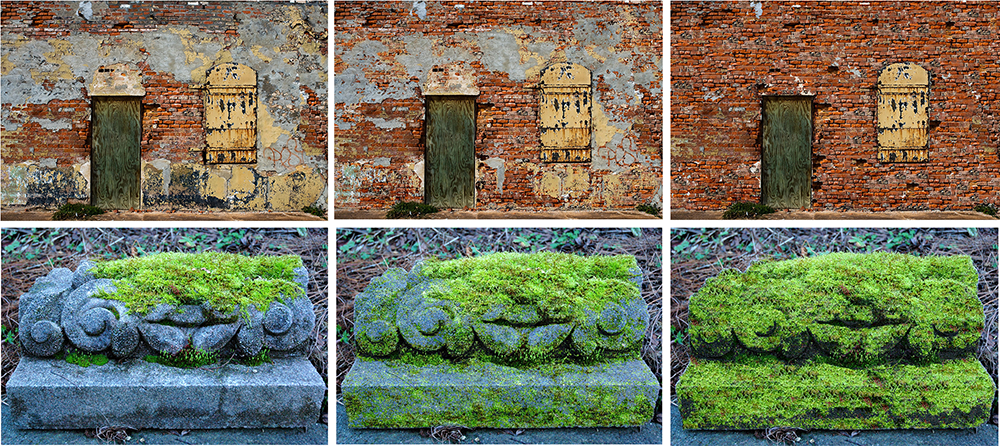

Satoshi Iizuka1, Yuki Endo2, Yoshihiro Kanamori2, and Jun Mitani2
1Waseda University
2University of Tsukuba
|  |
This paper presents an efficient approach for generating weathering effects with detailed appearance variations in a single image. Previous approaches merely change chroma or reflectance of weathered objects, which is not sufficient for materials with detailed shading and texture variations, such as growing moss and peeling plaster. Our method propagates such detailed features via seamless patch-based synthesis driven by weathering degree distribution. Unlike previous methods, the weathering degrees are calculated efficiently using Radial Basis Functions even for materials with wide color variations. We use graph cut-based optimization to identify the most weathered region as a ``weathering exemplar'', from which we sample weathering patches. We demonstrate our method enables us to generate various types of detailed weathering effects interactively.